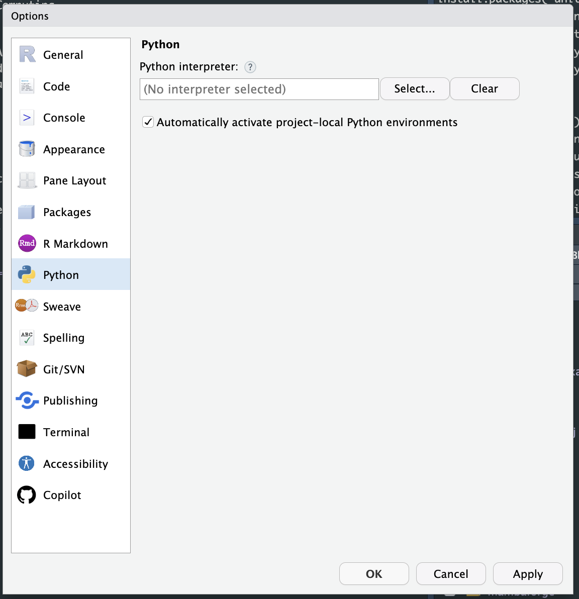

Integrated Development Environment Setup
The concept of a “project” is important when trying to point your integrated development environment (IDE) to your virtual environment. Some programs rely on special files to designate a project, others will treat an opened folder as a project. It’s important to know how to confirm what environment is being used in the IDE.
1 RStudio
RStudio has a concept of an “RStudio Project”, This is typically a special file in a folder with the .Rproj extension. In general, when trying to work with Python and Python virtual environments within RStudio you should have 2 things:
- An RStudio project
- A
venvvirtual environment in the root folder of the RStudio project
1.1 Project Set Up
If you are starting from a new Python project, the best way is to first create an RStudio project from the IDE. Once the RStudio project is created, you follow the steps in creating a venv virtual environment, such that the venv folder is also in the RStudio project.
Next, within the RStudio Global Options > Python tab, make sure the checkbox for “Automatically activate project-local Python environment” is checked.

This will make sure the venv in the current RStudio project gets picked up first when a Python interpreter is needed.
1.2 Package Set up
- Use this
requirements.txtfile treethe example directory- install
{reticulate}the R package:install.packages('reticulate')
When you run Python code, you will see a call in the console for reticulate::repl_python(). You will see the call from R, and then the Python prompts.
The R code will be displayed with a > and the python code will have a >>>
> reticulate::repl_python()
Python 3.10.3 (/Users/danielchen/git/rstudio/academyContent/.venv/bin/python) # TODO: Fix this output
Reticulate 1.30 REPL -- A Python interpreter in R.
Enter 'exit' or 'quit' to exit the REPL and return to R.
>>> 3 + 3
61.3 Reticulate
When using Python within RStudio, you can always confirm what Python is being used with the reticulate::py_config() function
> reticulate::py_config()
python: /Users/danielchen/git/rstudio/academyContent/.venv/bin/python
libpython: /Users/danielchen/.pyenv/versions/3.10.3/lib/libpython3.10.dylib
pythonhome: /Users/danielchen/git/rstudio/academyContent/.venv:/Users/danielchen/git/rstudio/academyContent/.venv
version: 3.10.3 (main, Oct 5 2022, 14:06:56) [Clang 14.0.0 (clang-1400.0.29.102)]
numpy: /Users/danielchen/git/rstudio/academyContent/.venv/lib/python3.10/site-packages/numpy
numpy_version: 1.24.1
NOTE: Python version was forced by use_python functionIf you have the wrong python loaded, you need to restart your R session first before trying to load another Python intepreter.
If you need to manually specify a python interpreter, you can use the reticulate::use_python() or reticulate::use_virtualenv() functions. If you use the reticulate::use_virtualenv() function to load the venv virtual environment, and the venv is named venv in the current project directory, make sure you call the function with a trailing /, venv/ so the reticulate::use_virtualenv() function knows to look for a directory named venv/ and not a virtual environment named venv in the ~/.virtualenvs directory. You may get an error message about not a python virtualenv otherwise,
Directory ~/.virtualenvs/venv is not a Python virtualenv2 VSCode
In VSCode or other VSCode forks, “projects” are defined by a folder that is opened up in the Primary Side Bar (the one on the left).
In general, you should have:
- A folder opened in VScode
- A
venvvirtual environment in that folder
Next, the command palliate (+Shift+P / Ctrl+Shift+P) will have a command for:
> Python: Select InterpreterThis will list all the Python’s you may have on your computer, but the easiest way to identify the venv. If you want to use Jupyter Notebooks within VSCode, you will be prompted to also install the IPython kernel for Jupyter (ipykernel) into the venv, along with the components to open and use jupyter notebooks.
pip install ipykernel jupyterlab3 Jupyter Lab
When working in jupyter lab, it first needs to be installed in the venv virtual environment.
pip install jupyterlabFrom there you can launch jupyter lab in the terminal
(venv) % jupyter labThe “Python 3” kernel that is listed, will be the Python that is being used in the venv that launched jupyter lab. You do not need to manually register every single venv on your computer for jupyter lab. Launching jupyter lab in the corresponding activated venv will give you the correct Python and virtual environment packages.